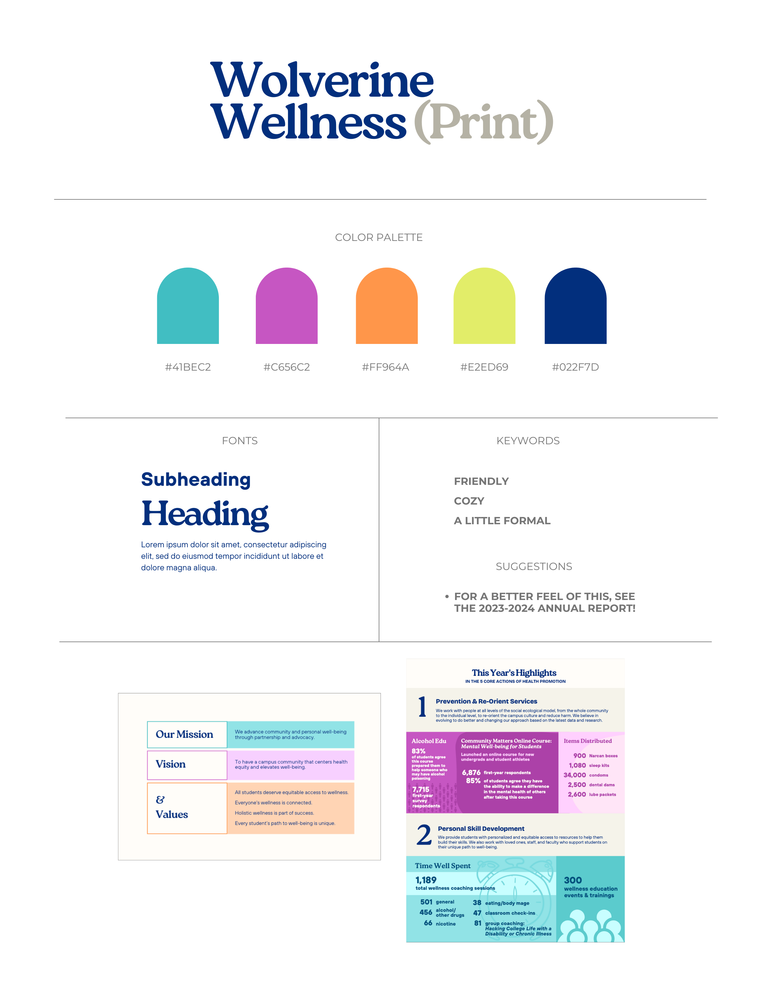
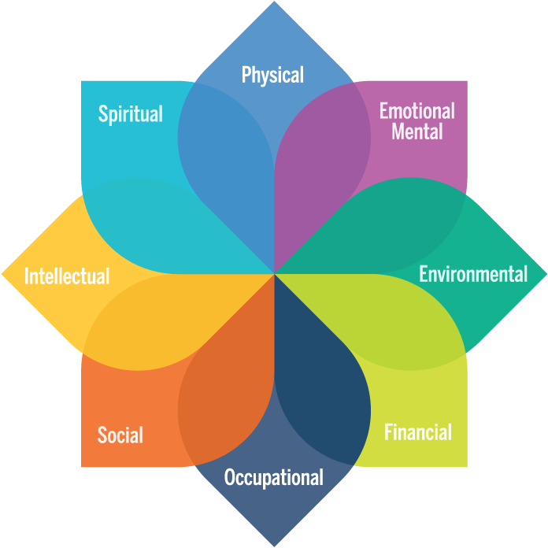
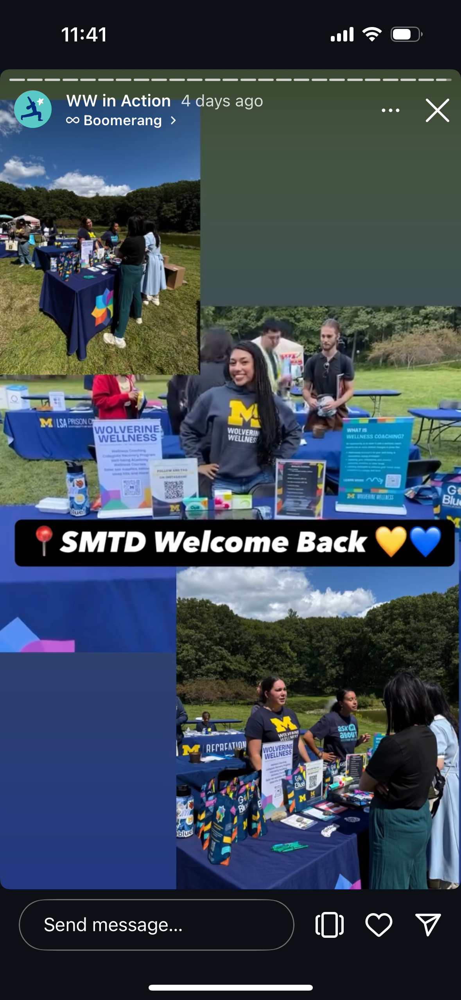

Wolverine Wellness Coaching Poster
Large-format promotional design for campus orientation and outreach events, translating wellness services into accessible visual communication.

Project Brief
Designed an 11.875x17" promotional poster for Wolverine Wellness to display at orientation and outreach events, communicating the services available through Wellness Coaching to new and prospective students.
The challenge was to adapt existing wellness coaching flyer content to a large-format poster that would be effective in high-traffic event environments where students need to quickly understand services while passing by.
Design Approach
Brand Consistency
Following the Wolverine Wellness Coaching brand kit, I used Bricolage Grotesque 18 as the primary typeface and incorporated the official Wolverine Wellness logo to maintain visual consistency across their marketing materials.

Wolverine Wellness Brand kit elements for print
Color Strategy
Applied the Wellness Wheel color palette to represent the different dimensions of wellness (physical, emotional, social, intellectual, etc.), creating visual distinction between service categories while reinforcing the holistic approach to student wellbeing.

Wellness Wheel color palette representing different wellness dimensions
Accessibility & Engagement
Designed a clear visual hierarchy with an arrow directing attention to a QR code call-to-action, allowing students to quickly access the Wellness Coaching page for detailed information. This reduced cognitive load at busy events while providing an easy path to learn more.
Arrow-guided QR code for seamless access to wellness resources
Outcome
Brand Alignment
Consistent with Wolverine Wellness visual identity
Wellness Wheel Integration
Color-coded dimensions of holistic wellness
QR Code Access
Seamless digital connection to resources
Event-Ready Design
Optimized for high-traffic environments

Poster displayed at campus orientation event
What I Learned
This project reinforced the importance of designing within brand guidelines while adapting content for specific environmental contexts where viewers engage differently than with traditional print or digital materials.
Key Takeaways:
Scale matters
Designing for large-format requires rethinking visual hierarchy and readability for varying viewing distances in event settings.
Brand consistency builds trust
Following established brand guidelines ensures the poster feels cohesive with other Wolverine Wellness materials students encounter.
Bridge physical and digital
QR codes effectively connect offline promotional materials to comprehensive online resources, meeting students where they are.
Impact
The poster was displayed at orientation and outreach events, providing accessible information about wellness coaching services to incoming students and the campus community.